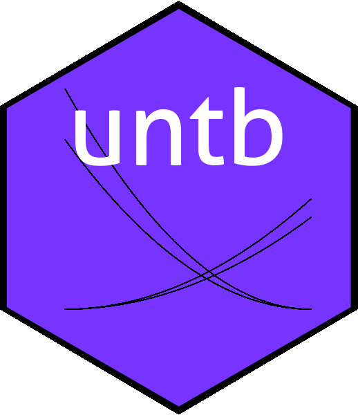

The untb package provides R-centric functionality for working with Hubbell’s unified neutral theory of biogeography and biodiversity. A vignette is provided in the package. The canonical reference is Hubbell 2001; to cite the package in publications please use Hankin 2007.
Installation
You can install the released version of the untb package from CRAN with:
The untb package in use
The package has two main classes, count and census. A count object is a named integer vector, with names being species and entries being respective counts. Thus:
x <- count(c(cats=9,pigs=3,dogs=2,rats=1,hogs=1,bats=1))
x
#> cats pigs dogs rats hogs bats
#> 9 3 2 1 1 1
summary(x)
#> Number of individuals: 17
#> Number of species: 6
#> Number of singletons: 3
#> Most abundant species: cats (9 individuals)
#> estimated theta: 2.861392Above, we see 9 cats, 3 pigs, and so on. Function summary() gives further information. A census object is an unordered factor with entries being the species of each individual:
as.census(x)
#> [1] cats cats cats cats cats cats cats cats cats pigs pigs pigs dogs dogs rats
#> [16] hogs bats
#> Levels: cats pigs dogs rats hogs batsThe package includes example datasets:
data(sahfos)
summary(sahfos)
#> Number of individuals: 460182
#> Number of species: 54
#> Number of singletons: 10
#> Most abundant species: Echinodermata larvae (247200 individuals)
#> estimated theta: 4.649568We can give a visual summary of a dataset in two ways:
plot(sahfos)

The package also includes the ability to generate random neutral assemblages:
summary(rand.neutral(1000,10))
#> Number of individuals: 1000
#> Number of species: 47
#> Number of singletons: 8
#> Most abundant species: 2 (330 individuals)
#> estimated theta: 10.09543
summary(rand.neutral(1000,10))
#> Number of individuals: 1000
#> Number of species: 52
#> Number of singletons: 16
#> Most abundant species: 4 (117 individuals)
#> estimated theta: 11.50422